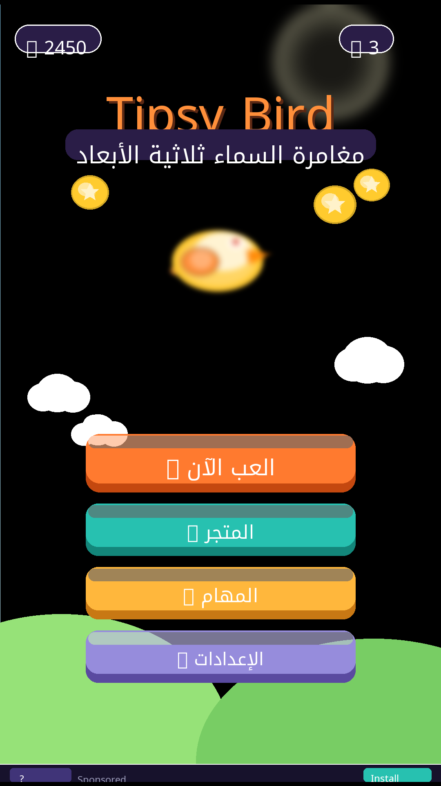
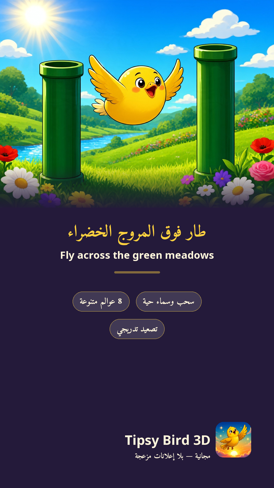
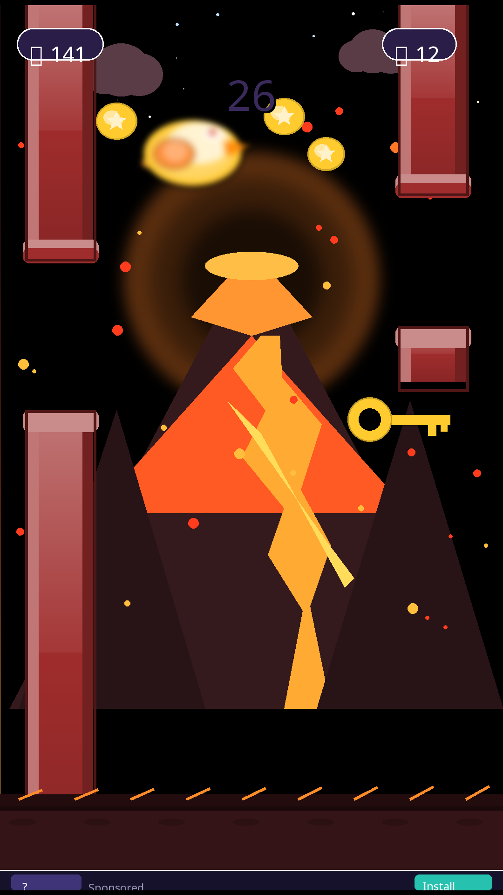
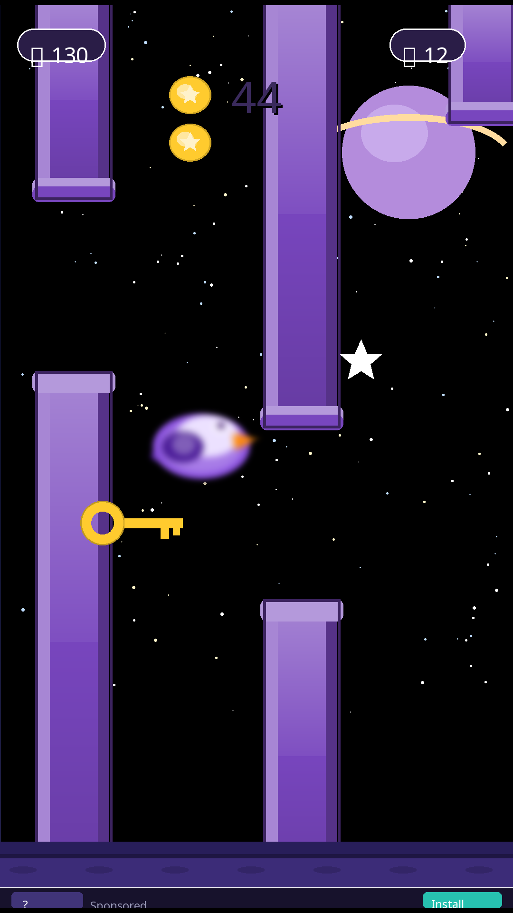
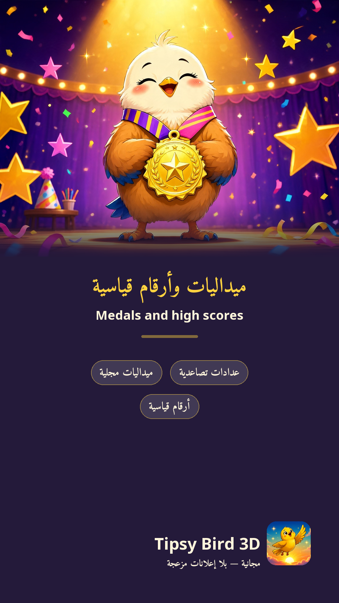

🖼️ من داخل اللعبة
لقطات حقيقية من القائمة حتى الحمم — كل عالم له سماء ورسوم خاصة به








لعبة طيران ممتعة بأجواء كرتونية تُبهج، تعمل دون إنترنت 100%، بثمانية عوالم متشعّبة و35 شخصية ومهام متجدّدة ومكافآت يومية. حمّلها مجاناً وابدأ الرحلة.
⬇ تحميل APK — مجانيلقطات حقيقية من القائمة حتى الحمم — كل عالم له سماء ورسوم خاصة به





كل ما تريده في لعبة طيران صغيرة في حجمها، ضخمة في محتواها
من المروج الهادئة إلى العاصفة الجهنمية — لكل عالم سماء وخلفيات وشعور مختلف تماماً يُفتح بالنقاط والمفاتيح.
من الكلاسيكي إلى الأسطورة: تنان، ساموراي، باندا، طاووس، عنقاء، ومجرة — كل شخصية بشكلها الخاص.
5 مهام تتجدّد دائماً وبصعوبة متصاعدة — أكملها واحصل على عملات تنقلك مباشرة إلى المتجر.
مكافأة كل يوم مع سلسلة 7 أيام تكبر جوائزها، وإن نسيت يوماً فأنت تفقد سلسلتها فقط.
درع، مغناطيس، تباطؤ الزمن، قوة رفرفة، إحياء… كل تعزيز يغيّر طريقة لعبك.
مات؟ شاهد إعلاناً اختيارياً وتابع من حيث توقفت — إعلانات فقط عند طلبك، بلا بانرات مزعجة.
اللعب والحفظ والأزياء والمهام تعمل كاملة دون أي شبكة — حمّلها وانسَ مشاكل الاتصال.
نظام حفظ مزدوج (محلي + نسخة احتياطية) يحمي نقاطك وعملاتك حتى لو حذفت اللعبة.
افتحها بالنقاط والمفاتيح 🔑 التي تكسبها من المهام
عالمك الأول — سماء نهارية صافية ومرج ناعم على الطراز الكلاسيكي.
✓رمال ذهبية وشمس حارقة — الصواب في الرفرفة يصعب كل ثانية.
✓جليد ونور قطبي — اختبر دقة رفرفتك في الهواء البارد.
✓سماء مشتعلة وأنهار حمم — أنقذ جناحيك من الجمر!
🔒 30🪙 + 3🔑أعماق زرقاء وفقاعات ومرجان — تحليق فوق الأمواج.
🔒 50🪙 + 5🔑نجوم ومجرّات بلا جاذبية — طيران مباشر إلى الكون.
🔒 75🪙 + 8🔑أشجار كثيفة وضباب أخضر — عقبات مختبئة بين الأوراق.
🔒 100🪙 + 12🔑برق وغيوم داكنة وريح تعاندك — الاختبار النهائي.
🔒 130🪙 + 18🔑كل ما يسأل عنه اللاعبون
لا — اللعبة تعمل دون إنترنت 100%. الإعلانات الوحيدة في اللعبة (المكافآت الاختيارية) تحتاج اتصالاً فقط لعرضها، وكل شيء آخر يعمل بعد قطع الاتصال تماماً.
أبداً. كل العملات والمفاتيح والأزياء تُكسب باللعب والمهام والمكافآت اليومية فقط — لا يوجد أي شراء حقيقي داخل اللعبة.
عندنا نظام حفظ مزدوج: حفظ محلي + نسخة احتياطية في التطبيق نفسه. حتى بعد الحذف وإعادة التثبيت يحاول التطبيق استعادة نقاطك وعملاتك تلقائياً.
عندك ثلاث درجات صعوبة (سهل / عادي / صعب) وثلاث أطوار جرافيكس لتحديد الأداء على جهازك، مع عدّاد FPS طوعي في الإعدادات.
نعم — لا يوجد أي محتوى غير لائق ولا مشتريات داخلية. نوصي بأولياء الأمور بمراجعة سياسة الخصوصية وشروط الاستخدام.
حمّل اللعبة مباشرة من إصدارات GitHub — APK موقّع ورسمي بحجم 6.7 ميجابايت فقط، مع تحديثات تلقائية عبر موقعنا.
⬇ تحميل النسخة الأخيرة